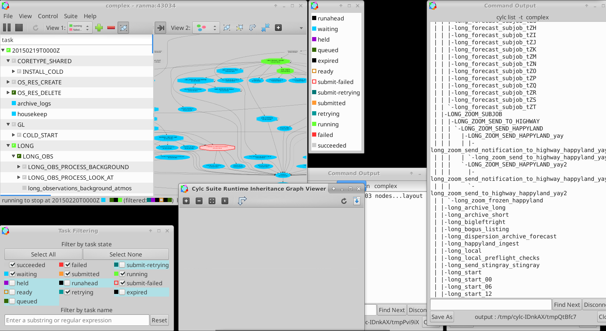
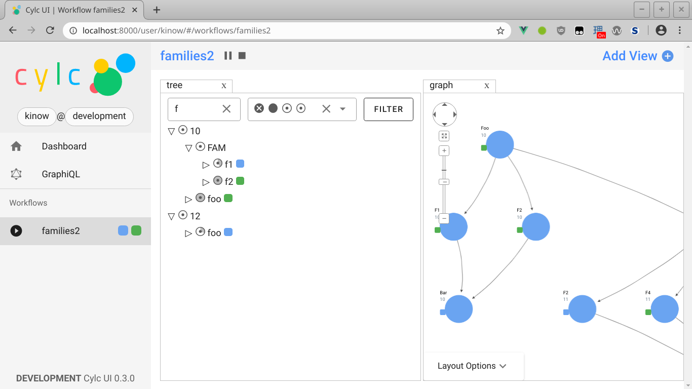
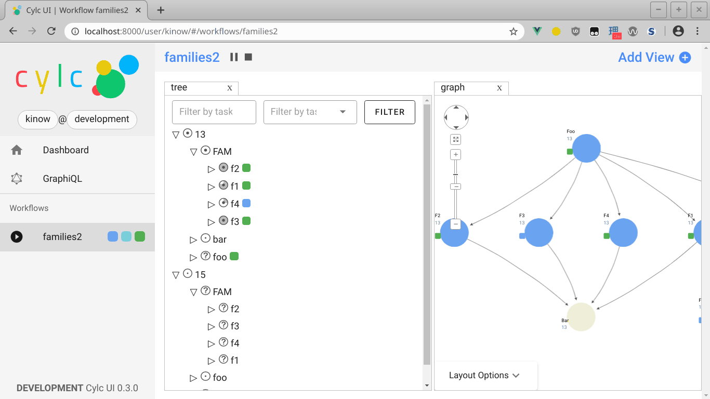
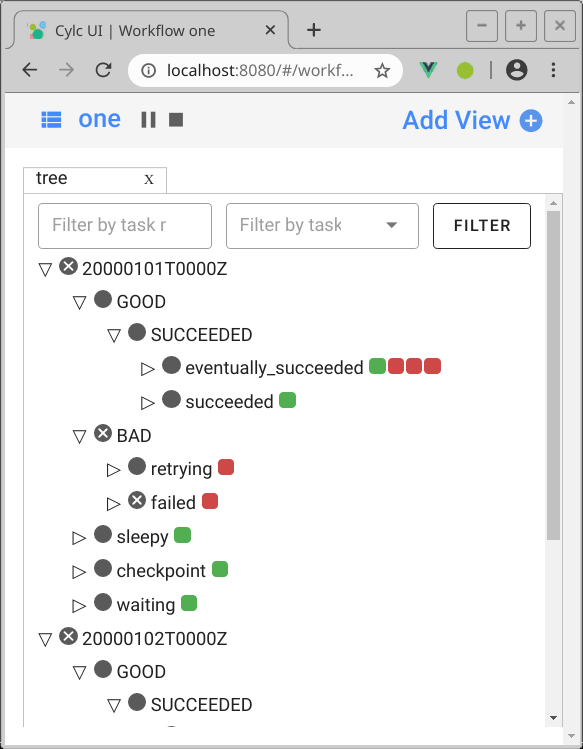
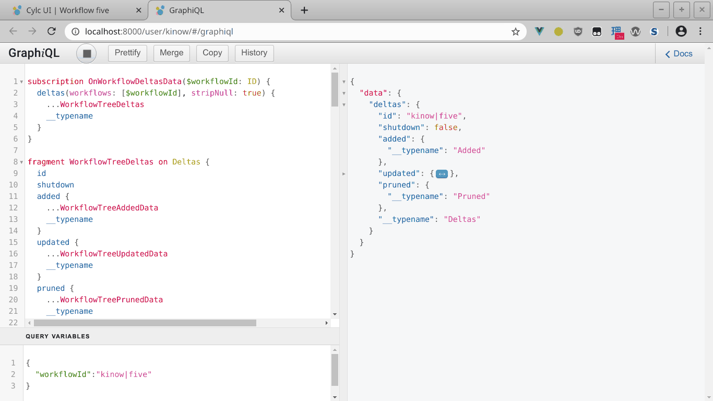

Cylc UI Scalability
Bruno P. Kinoshita
, Research Software Engineer at NIWA New Zealand—NZRSE2020
## UI Scalability - Scalability definition varies depending on the **context** - systems load, graph [1], business, **user interface** (design) - UI scalability - Building user experience at scale - *“As we add <span class="underline">more features</span> in the product, the UI must <span class="underline">support scalability</span> and, at the same time, provide a <span class="underline">seamless experience that minimizes distraction</span>.”* [2]
## The Problem - **Cylc 8** UI is replacing an existing **Cylc 7** desktop GUI 1. How to maintain a good UX now in a **browser**? 2. How to handle and display workflow **data** to users? 3. And more: accessibility, browser support, screen size…
#### 1) UX in the browser vs. desktop - <span class="underline">Challenges</span> - Limited access to hardware resources - Different security model (HTTP, JS, Sandboxing, browser extensions…) - Single window/tab mode in browser - DOM (document object model) - Browser memory (heap, GC), JS execution engine (render, reflow, repaint…)
#### 1) UX in the browser vs. desktop  <p class="image-legend">Cylc 7 GUI</p>
#### 1) UX in the browser vs. desktop - <span class="underline">Solutions</span> - Reduce complexity for UX, also improving performance - Reusable **components** (Vue and Vuetify) - **Virtual DOM** (Vue) - Sensible defaults - e.g. jobs and job details are collapsed by default in the Tree view limiting number of visible elements - the default landing page puts little load on the backend - Web development good practices (caching where possible, security headers, cookies flags) - **Reactive** (Vue and WebSockets) instead of periodically polling
#### 1) UX in the browser vs. desktop  <p class="image-legend">Cylc 8 Web UI</p>
#### 1) UX in the browser vs. desktop  <p class="image-legend">Cylc 8 Web UI</p>
#### 1) UX in the browser vs. desktop  <p class="image-legend">Cylc 8 Web responsive UI</p>
#### 2) Displaying Cylc workflow data - <span class="underline">Challenges</span> - Cylc handles **complex and cyclic workflows** (directed cyclic graphs) - A workflow may have many **updates** in a short time (or the reverse!) - Designing an **API to serve Cylc workflow data is hard**
#### 2) Displaying Cylc workflow data - <span class="underline">Solutions</span> - Use **GraphQL** to model the API - Greater flexibility to the UI to build components via queries, fragments, variables - **WebSockets** connections to send backend data to the UI - UI elements are **reactive**, updated only when the data changes - Send workflow **deltas** (add/remove/update)
#### 2) Displaying Cylc workflow data We are using GraphQL instead of REST ```gql # A GraphQL query, with `workflowId` parameter # `subscription` here means that we want to receive # updates (we will subscribe to a query), in our case # with WebSockets. subscription ($workflowId: ID) { workflows(ids: [$workflowId]) { id name taskProxies { ...TaskProxyDataFragment } nodesEdges { … } } } ```
#### 2) Displaying Cylc workflow data  <p class="image-legend">GraphiQL</p>
#### 3) Other challenges (with solutions) - Support **multiple browsers** - Our UI app is built with **webpack** and **babel** - **Polyfills** when necessary - Screen size - CSS framework that supports **responsive layouts** - Custom components for responsive layouts - Accessibility - **i18n** - **theming** (e.g. color-blindness, high-contrast…) - WCAG 2.0/2.1 [3], section 508 [4]
#### Future improvements - Lazy loading - Load tree and graph nodes on-demand - Virtual scrolling - throttling/debouncing - HTTP/2 - blocked by Tornado #1438 - Scale JupyterHub (k8s support, but database constraint) - Caching of other resources (assets, queries…)
#### References 1. Graph Databases: Their Power and Limitations 2. https://blog.rapid7.com/2011/11/10/technology-meets-empathy/ 3. https://www.w3.org/TR/WCAG21/ 4. https://section508.gov/ For more: https://cylc.github.io/